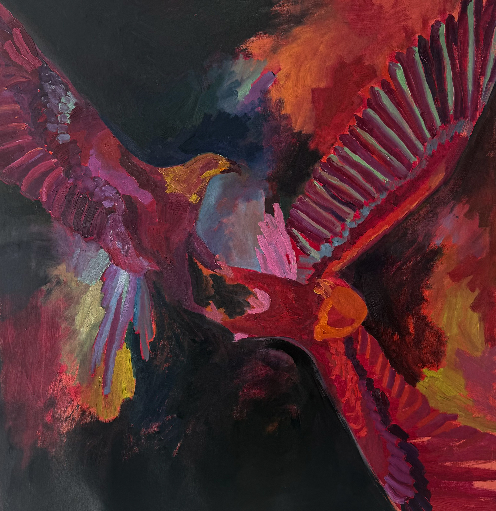
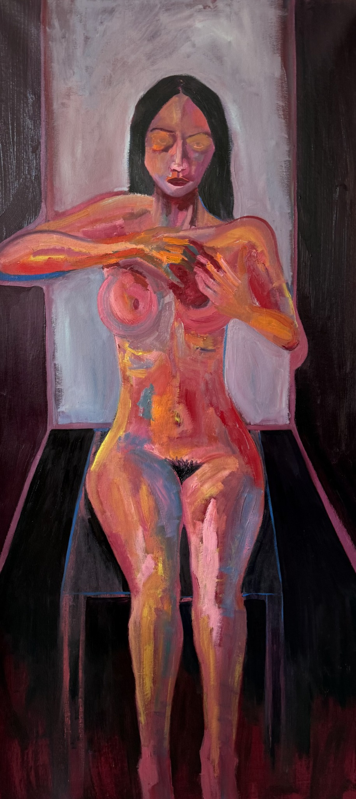
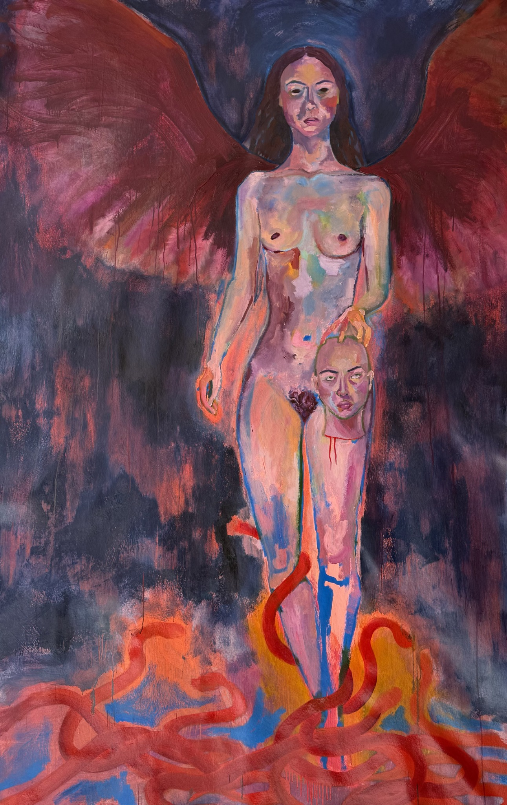
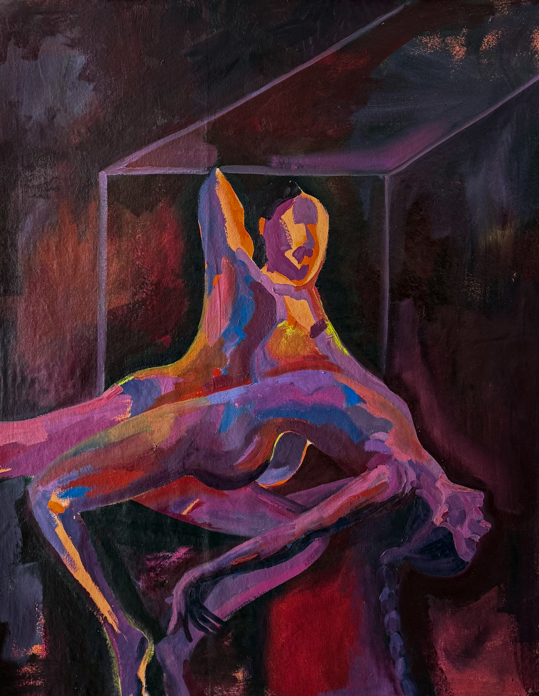
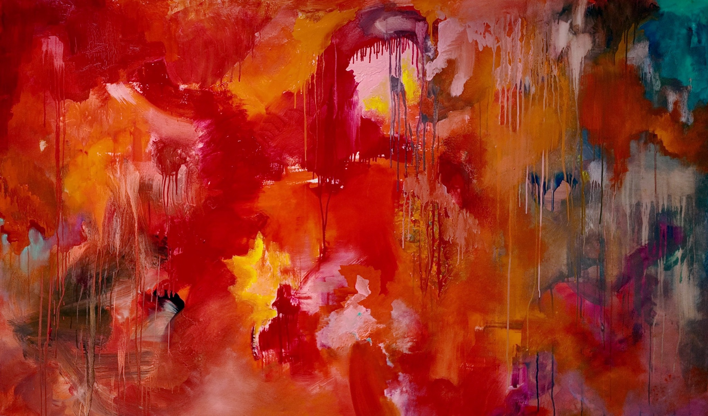
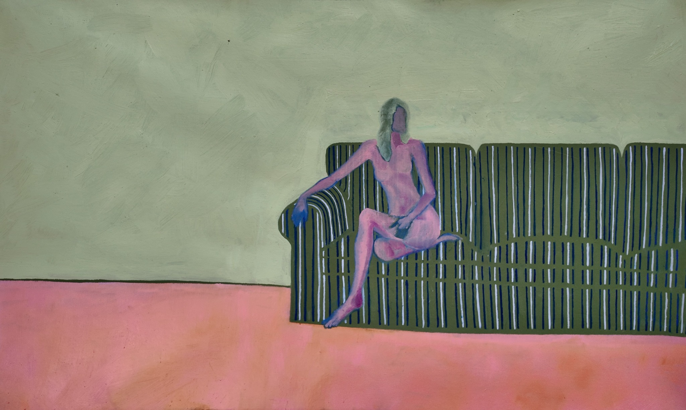
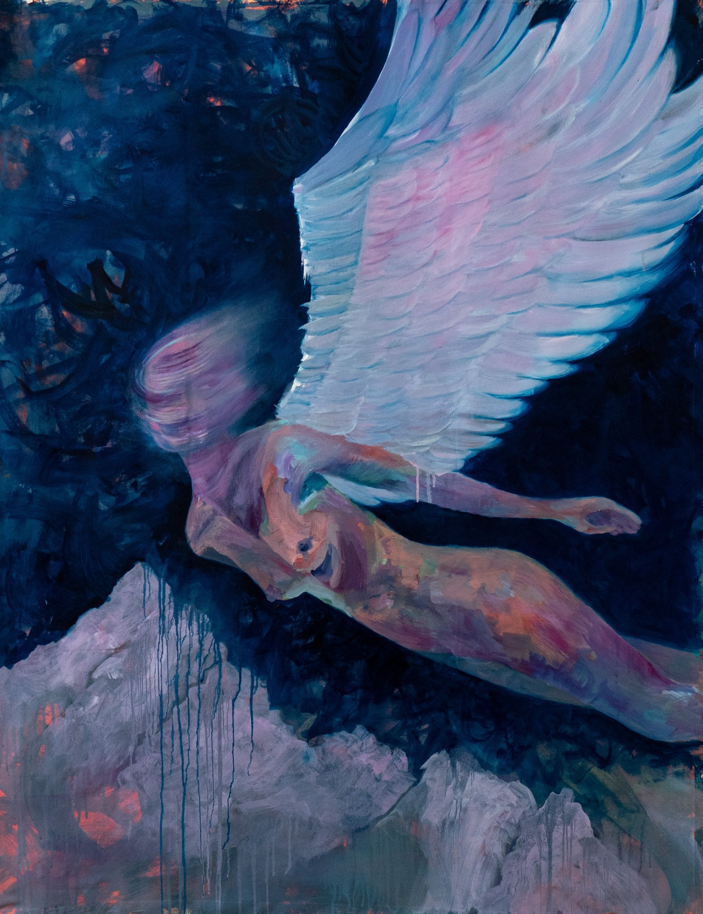
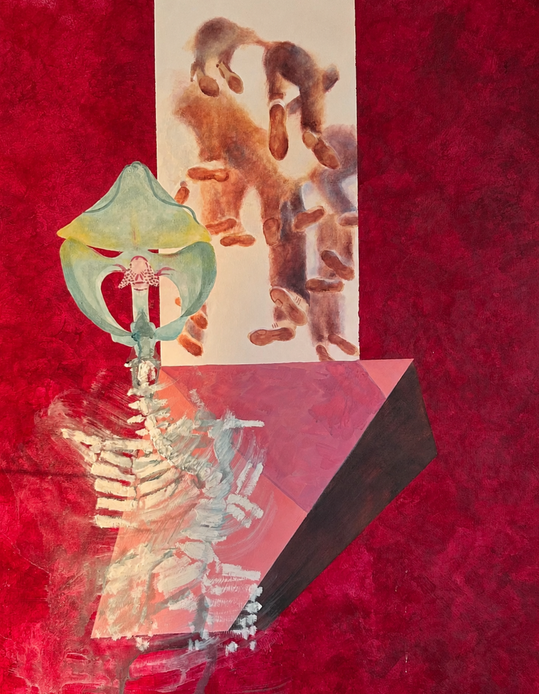
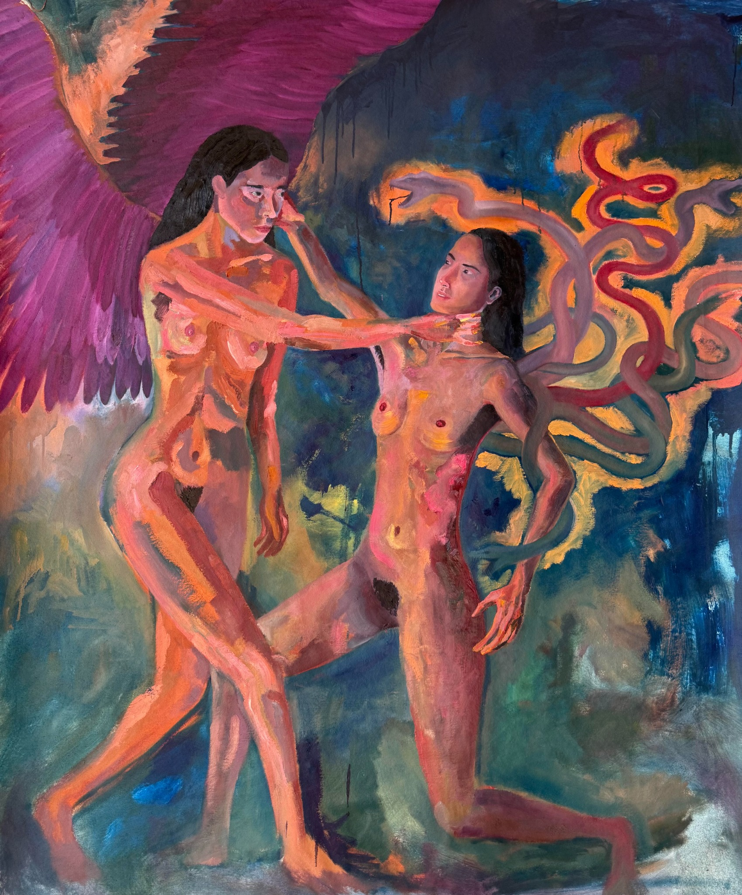
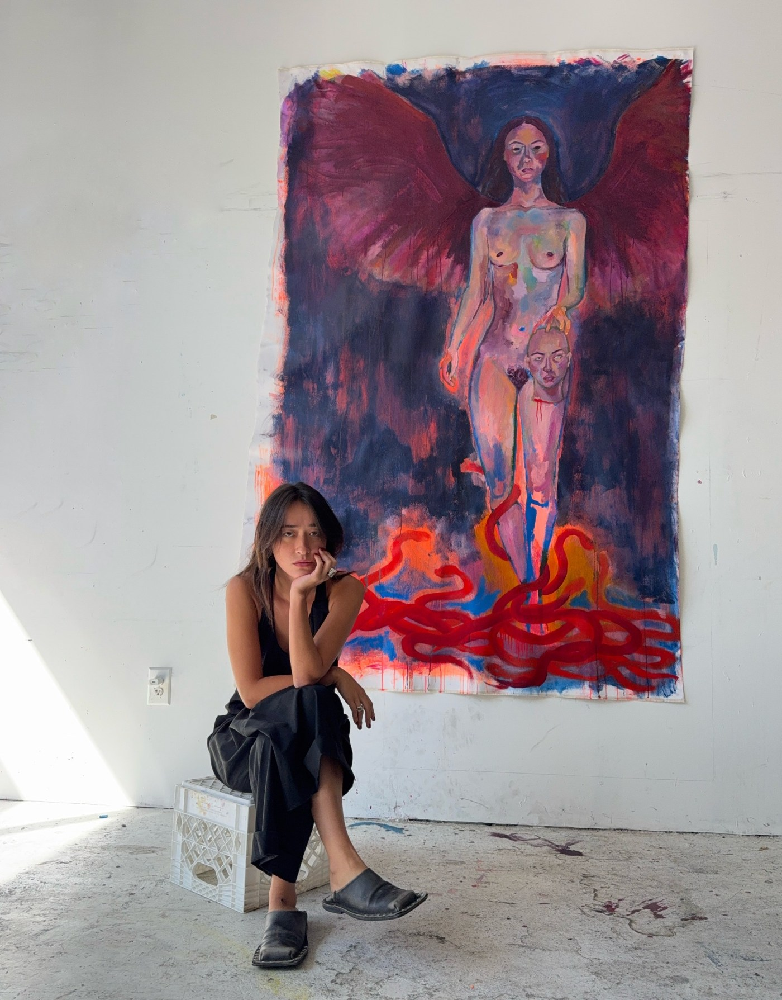

Contemporary painter · New York
Samina Ulani.
The savage and the sacred.









About
Samina Ulani
Samina Ulani is a Belgian-born, Australian-raised contemporary painter of Korean, German, English and Indonesian heritage, currently based between Paris and New York.
Working primarily in oil, her practice explores the beauty and brutality of the human experience, examining the tensions between love and fear, vulnerability and power, desire and self-preservation.
Drawing on mythology, dreams, nature and personal experience, Ulani creates psychologically charged figurative paintings in which the sacred and the savage, the beautiful and the grotesque become difficult to distinguish. Her figures inhabit moments of confrontation and transformation, where internal conflicts take on physical form.
Through visceral imagery and emotional intensity, her work confronts the contradictions inherent in being human, exploring the possibility of finding freedom not through the avoidance of pain, but through the willingness to experience life in its entirety.
Contact
saminaulani@gmail.com Instagram ↗